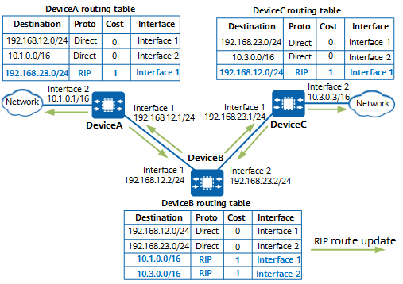

Each routing device running RIP maintains a RIP database which stores all RIP routes discovered by the routing device. Each routing entry in the RIP database contains the destination network address/network mask, metric, next hop address, aging timer, and route state flag. Valid routing entries in the RIP database are loaded to the routing table of the RIP routing device.
Each RIP routing device periodically advertises the routes in its routing table. When a routing device receives a RIP route update of a valid and undiscovered route, it loads the route to the routing table and sets the metric and next hop address of the route.
Figure 1 shows each routing device's routing table in the initial startup phase. DeviceA, DeviceB, and DeviceC are directly connected and enabled with RIP, and the routing table of each routing device contains the destination network address, network mask, protocol type, metric value, and outbound interface of a route.
In the initial startup phase, all routing devices can automatically discover their direct routes and add them to their routing tables as shown in Figure 1. Here, DeviceA is used as an example. Two direct routes 192.168.12.0/24 and 10.1.0.0/16 are added to the routing table of DeviceA. RIP considers the metric of a direct route as 0 hops, indicating that the route does not pass through any routing device before reaching the network segment.
Figure 2 shows each routing device's routing table in the initial routing information exchange phase. As DeviceA, DeviceB, and DeviceC run RIP, they all periodically advertise the routes in their routing tables through RIP messages from RIP-enabled interfaces. RIP-1 uses a broadcast address as the destination IP address of a RIP message, and RIP-2 uses a multicast address.

DeviceB advertises the routes in its routing table through interface 1 and interface 2. Using the route 192.168.23.0/24 as an example, DeviceB advertises updates of the route to DeviceA through interface 1 and sets the metric of the route to 1 hop. A RIP routing device increases the hop count by 1 before it advertises a route in its routing table. The RIP routing device that receives the updated route then uses this new hop count.
After DeviceA receives the route update advertised by DeviceB, it determines that route 192.168.23.0/24 does not exist in its routing table. DeviceA then learns the route, adds it to its routing table, and sets the metric of the route to 1 hop (as the route originating from DeviceA to 192.168.23.0/24 passes through one RIP routing device). In addition, the next hop of the route is set to DeviceB (the update source) and interface 1 is configured as the outbound interface.
DeviceC also receives the route updates advertised by DeviceB through its interface 1. DeviceC learns the route to 192.168.12.0/24, adds the route to its routing table, and sets the metric of the route to 1 hop (as the route originating from DeviceC to 192.168.12.0/24 passes through one RIP routing device). In addition, the next hop of the route is set to DeviceB (the update source) and interface 1 is configured as the outbound interface.
DeviceB receives route updates advertised by DeviceA and DeviceC through its interface 1 and interface 2 and learns the routes to 10.1.0.0/16 and 10.3.0.0/16, respectively.
After route convergence is completed, RIP routing devices periodically advertise routes in their routing tables. When the next update period arrives, all the RIP routing devices advertise routes in their routing tables again.
After DeviceA receives the routes advertised by DeviceB, it determines that the route to 10.3.0.0/16 does not exist in the routing table. As a result, DeviceA learns the route, adds it to the routing table, and sets the route metric to two hops. This means that the route originating from DeviceA to 10.3.0.0/16 passes through two routing devices. Similarly, DeviceC can learn the route 10.1.0.0/16 from DeviceB. In this case, all three routing devices have routes to all network segments, as shown in Figure 3. The routing tables of the routing devices are stable, and route convergence is complete. Although routes on the network have been converged, routing devices still periodically advertise routes in their routing tables through RIP to ensure route validity.